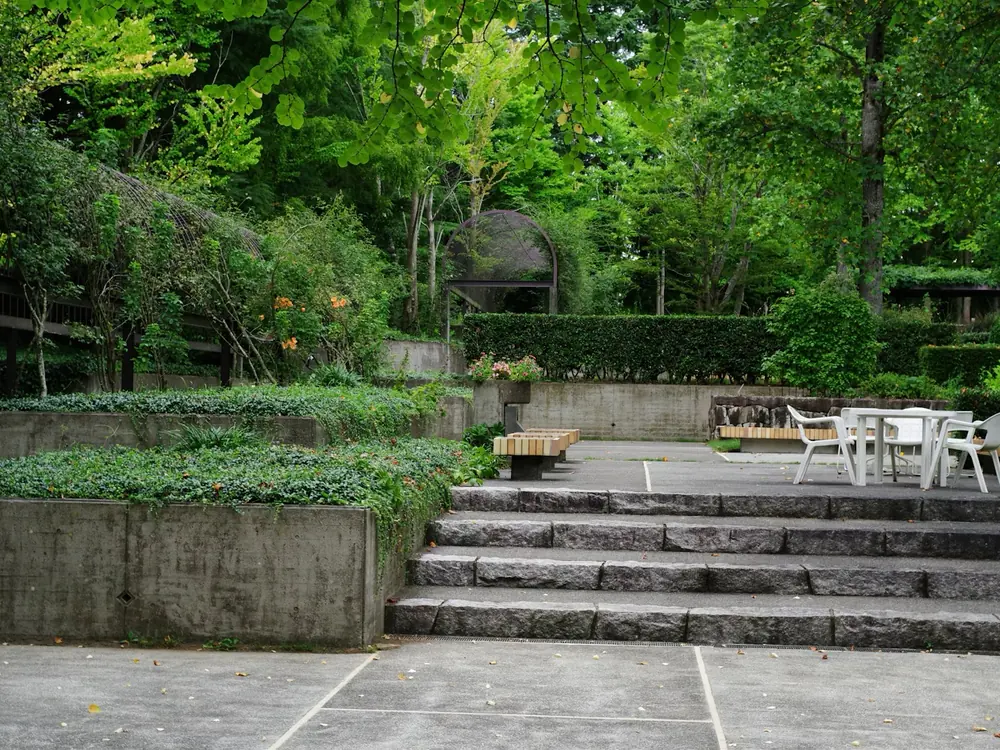
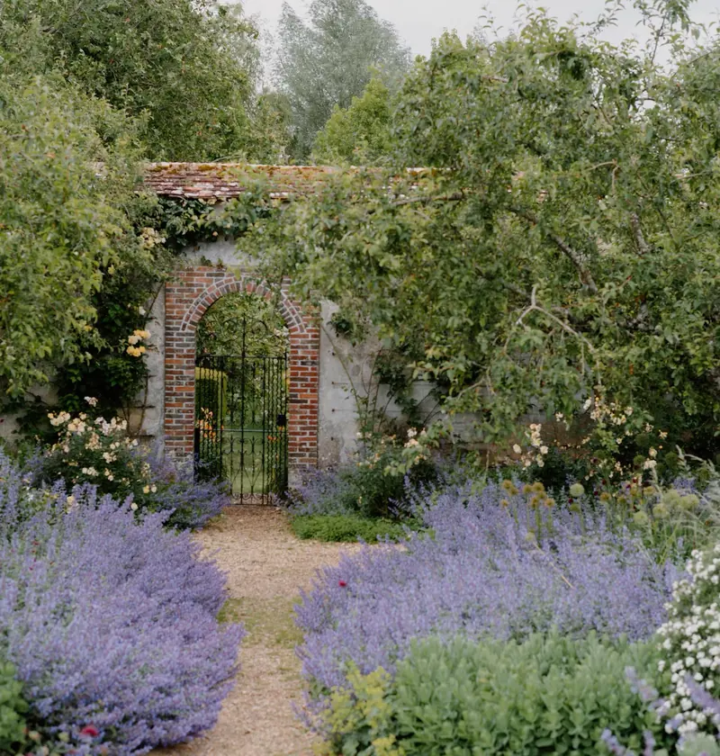
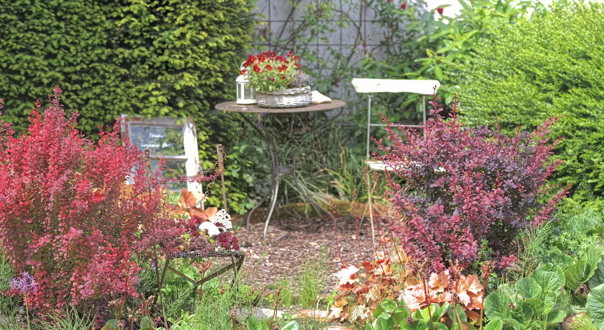
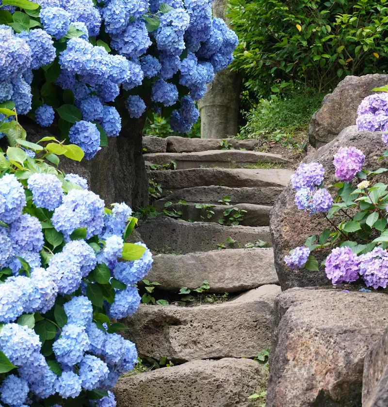
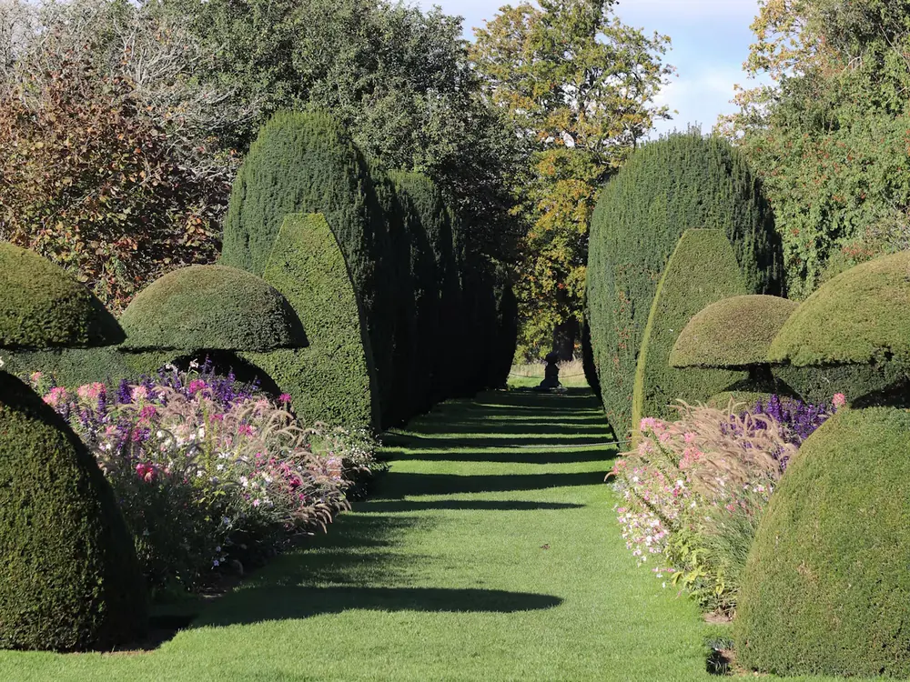

Gardens we’ve designed and planted.
Terraces, planting and stonework from across Somerset, including gardens we still look after today.
-

Stone terrace, near FromeTerraces Wide steps up to a paved terrace, with new planting in the raised beds either side.
-

Walled garden, BrutonPlanting Both borders replanted with catmint, roses and hardy geraniums.
-

Courtyard corner, WellsSeating areas A small seating area set into an old yew hedge, with berberis for autumn colour.
-

Hydrangea steps, Shepton MalletStonework Old stone steps relaid by hand, keeping the hydrangeas that frame them.
-

Yew avenue, Castle CaryMaintenance We have clipped this avenue twice a year since 2019.